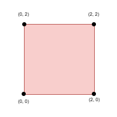
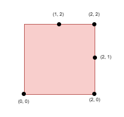
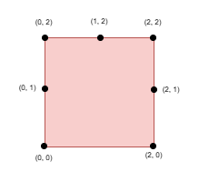

| Category | Difficulty | Likes | Dislikes |
|---|---|---|---|
| Algorithms | Hard | 40 | 8 |
array | binary-search | greedy
You are given an integer side, representing the edge length of a square with corners at (0, 0), (0, side), (side, 0), and (side, side) on a Cartesian plane.
You are also given a positive integer k and a 2D integer array points, where points[i] = [xi, yi] represents the coordinate of a point lying on the boundary of the square.
You need to select k elements among points such that the minimum Manhattan distance between any two points is maximized.
Return the maximum possible minimum Manhattan distance between the selected k points.
The Manhattan Distance between two cells (xi, yi) and (xj, yj) is |xi - xj| + |yi - yj|.
Example 1:
Input: side = 2, points = [[0,2],[2,0],[2,2],[0,0]], k = 4
Output: 2
Explanation:

Select all four points.
Example 2:
Input: side = 2, points = [[0,0],[1,2],[2,0],[2,2],[2,1]], k = 4
Output: 1
Explanation:

Select the points (0, 0), (2, 0), (2, 2), and (2, 1).
Example 3:
Input: side = 2, points = [[0,0],[0,1],[0,2],[1,2],[2,0],[2,2],[2,1]], k = 5
Output: 1
Explanation:

Select the points (0, 0), (0, 1), (0, 2), (1, 2), and (2, 2).
Constraints:
1 <= side <= 1094 <= points.length <= min(4 * side, 15 * 103)points[i] == [xi, yi]points[i] lies on the boundary of the square.points[i] are unique.4 <= k <= min(25, points.length)